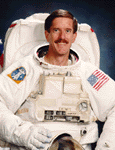

Lyndon B. Johnson Space Center
Houston, Texas 77058
|
National Aeronautics and Space Administration Lyndon B. Johnson Space Center Houston, Texas 77058 |
 |
Biographical Data |
||
James F. Reilly, II (Ph.D.)
NASA Astronaut (Former)
PERSONAL DATA: Born March 18, 1954, Mountain Home Air Force Base, Idaho. Considers Mesquite, Texas, to be his hometown. He enjoys flying, skiing, photography, running, soccer, hunting and fishing.
EDUCATION: Graduated from Lake Highlands High School, Dallas Texas, in 1972. Bachelor of science degree in geosciences from University of Texas-Dallas, 1977. Master of science degree in geosciences from University of Texas-Dallas, 1987. Doctorate in geosciences from University of Texas-Dallas, 1995.
ORGANIZATIONS: Officer in the U.S. Navy Reserve. Member, American Association of Petroleum Geologists, Naval Reserve Association, Tailhook Association, Reserve Officers Association, Association of Space Explorers.
SPECIAL HONORS: Antarctic Service Medal, 1978. US Navy ROTC scholarship, 1972. Seventh Honorary U.S. Marshal, 2001.
EXPERIENCE: After receiving his Bachelor of Science degree in 1977, Reilly entered graduate school and was selected to participate as a research scientist specializing in stable isotope geochronology as part of the 1977-1978 scientific expedition to Marie Byrd Land, West Antarctica. In 1979, he accepted employment as an exploration geologist with Santa Fe Minerals Inc., in Dallas, Texas. From 1980 to the time he was selected for the astronaut program, Reilly was employed as an oil and gas exploration geologist for Enserch Exploration Inc., in Dallas, Texas, rising to the position of Chief Geologist of the Offshore Region. Concurrent with his duties as an exploration geologist, he was actively involved in the application of new imaging technology for industrial applications in deep water engineering projects and biological research. As part of this work, Reilly has spent approximately 22 days in deep submergence vehicles operated by Harbor Branch Oceanographic Institution and the U.S. Navy.
NASA EXPERIENCE: Selected by NASA in December 1994, Reilly reported to the Johnson Space Center in March 1995, has completed a year of training and evaluation, and is qualified for flight assignment as a mission specialist. Initially assigned to work technical issues for the Astronaut Office Computer Support Branch, Reilly also served as the Astronaut Office lead on Shuttle training, as Payloads and Procedures Operations lead for the Astronaut Office ISS Branch, and lead for Crew Exploration Vehicle crew systems and landing operations in the Astronaut Office Exploration Branch. Reilly flew on STS-89 in 1998, STS-104 in 2001 and STS-117 in 2007. He has logged over 853 hours in space, including 5 spacewalks totaling 31 hours and 10 minutes. Reilly retired from NASA in May 2008. He serves as Vice President of Research and Development, Photo Stencil Corporation, Colorado Springs, Colorado.
SPACE FLIGHT EXPERIENCE: STS-89 (January 22-31, 1998) was the 8th Shuttle- Mir docking mission during which the crew transferred more than 9,000 pounds of scientific equipment, logistical hardware and water from Space Shuttle Endeavour to Mir. In the fifth and last exchange of a U.S. astronaut, STS-89 delivered Andy Thomas to Mir and returned with David Wolf. Mission duration was 8 days, 19 hours and 47 seconds, traveling 3.6 million miles in 138 orbits of the Earth.
STS-104 (July 12-24, 2001) was the 9th assembly flight of the Shuttle to the International Space Station (ISS). Flight 7A delivered and installed the joint airlock module to complete the second phase of ISS assembly. Three spacewalks, totaling 16 hours and 30 minutes, were conducted during the mission with the third being the inaugural spacewalk from the joint airlock. Mission duration was 12 days, 18 hours and 35 minutes traveling 5.3 million miles in 200 orbits of the Earth.
STS -117 Atlantis (June 8-22, 2007) was the 118 th Shuttle mission and the 21st mission to visit the International Space Station. The successful construction and repair mission involved multiple EVAs by 5 astronauts. Reilly accumulated 14 hours and 40 minutes of EVA in 2 spacewalks. The mission also delivered and returned with an expedition crew member. STS-117 returned to land at Edwards Air Force Base, California, having traveled 5.8 million miles in 14 days.
MAY 2008
This is the only version available from NASA. Updates must be sought direct from the above named individual.